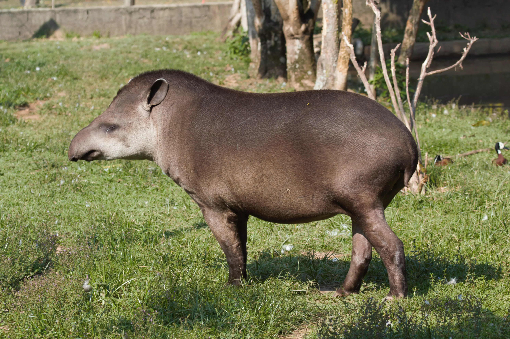
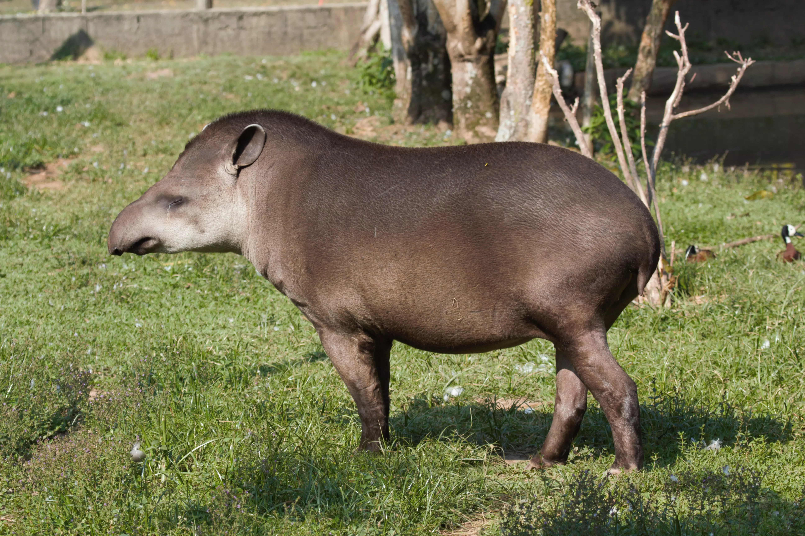

Visite o Zoológico de Guarulhos e descubra um mundo de biodiversidade e educação ambiental. Lar com cerca de 400 animais, o zoológico é um espaço de conexão entre a natureza e a conscientização, oferecendo uma experiência única de preservação e lazer.
 

Zoológico de Guarulhos, conciliando natureza com educação.
O Zoológico Municipal de Guarulhos, criado em 1981, abriga cerca de 400 animais de 100 diferentes espécies, com 91% delas sendo nativas do Brasil. Localizado em uma ampla área verde, o zoológico prioriza a conservação e a conscientização ambiental, oferecendo ao público uma oportunidade de contato com a natureza. Com muitas espécies de aves, répteis e mamíferos ameaçados de extinção, o zoológico realiza atividades pedagógicas e interativas para sensibilizar os visitantes sobre a importância da proteção da biodiversidade. Além de uma opção de lazer, o Zoológico de Guarulhos é um centro de pesquisa e conservação, desempenhando um papel fundamental na proteção de espécies vulneráveis.


COMO CHEGAR
Endereço
Rua Dona Pagnocelli, 344 - Jardim Rosa de França - Guarulhos - SP
Horário de Funcionamento
Terça a Domingo das 09:00 às 17:00
Fechamento dos Portões
Às 16:30